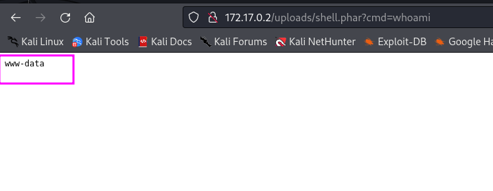

MÁQUINA DOCKERLABS
Para utilizar esta máquina devemos primeiro baixar os arquivos e assim implantá-la com Docker.
Baixamos o arquivo da página https://dockerlabs.es/
Para implantar o laboratório executamos da seguinte forma, para que também possamos ver que ele nos diz a direção que teremos, bem como o que fazer quando terminarmos.
COLETA DE INFORMAÇÕES
nmap 172.17.0.2 -A -sS -sV -sC --open -p- -T5 -n -Pn
Verificando podemos ver que temos a porta 80 aberta.
UPLOADS: É uma pasta onde são armazenados os arquivos que possivelmente podem ser carregados por alguma rota.
UPLOAD.PHP: É um arquivo php que não pode ser lido, possivelmente é o script intermediário responsável por enviar os arquivos para uploads
MACHINE.PHP: O mais interessante dos 3, consiste em um formulário no qual você pode fazer upload de arquivos que serão armazenados no diretório uploads.
Este é o conteúdo do machine.php qual nos pede para inserir um arquivo para fazer upload.
Tentamos fazer upload de um arquivo txt e ele nos informará o erro que so permite arquivos zip
Como evidentemente estamos diante de um possível Vulnerabilidade de upload de arquivo arbitrário .
Abrimos burp suite para simplificar a tarefa, carregamos um arquivo. Capturamos a solicitação e enviamos para reapeter. Lá modificaremos as extensões até encontrarmos uma diferente zip que possa ser interpretada pelo servidor e ao mesmo tempo pular as validações.
Pois PHP temos o seguinte extensiones bypass extensiones bypass ncontrado no hacktricks 1
PHP: .php, .php2, .php3, .php4, .php5, .php6, .php7, .phps, .phps, .pht, .phtm, .phtml, .pgif, .shtml, .htaccess, .phar, .inc, .hphp, .ctp, .módulo
Encontramos a extensão correta phar e criamos uma reverse shell e enviamos burp suite com as seguintes características:
veja que o arquivo “shell.phar” foi enviado com sucesso.
agora é so clicar nele, e acrescentar na URL os comando ?cmd=whoami.
ficando assim: 172.17.0.2/uploads/shell.phar?cmd=whoami
veja que agora somos www-data

agora vamos enviar uma reverse shell na URL para nos conectar pelo NETCAT.
vamos pegar a no site: https://www.revshells.com/
agora vamos no BURP SUITE e colamos a reverse shell que nem esta mostrando a imagem abaixo:
Abrimos um shell em modo de escuta com nc
Procurando maneiras de escalar privilégios executar o comando sudo -l
Vemos que temos acesso sudo a binários que podem ler arquivos com extensão root.
Vamos aos percursos mais comuns onde pode haver alguma informação e opt encontramos algo interessante:
consulta acima pelo CHATGPT. ou se preferir no site abaixo:
Vamos para https://gtfobins.github.io/ e ver como explorar esses binários.
os dois comando tanto do cut e a do grep fucionou:
Tentamos fazer login como root e senha encontramos.
somos root
bobmarley